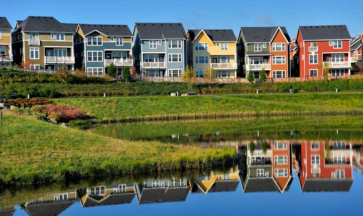
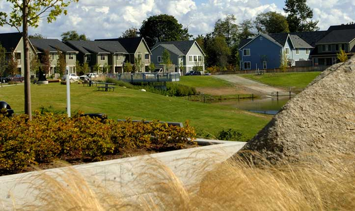
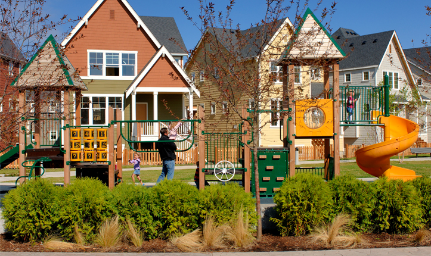

PROJECT TYPE
- Urban
- Re-development Plan
- Housing Community
- Affordable Housing
- Mixed-use
- Creek
- Pond
Environmental Benefits
- Reduces CO2 emissions
- Reintroduces Native Plants
- Ecologically Manages Stormwater
- Conserves Water
- Captures Water
- Cleans Water
- Protects Water Supply
- Preserves Plants
- Improves Walkability

Links
- High Point Housing Web site
- High Point Neighborhood Web site
- High Point: Seattle’s Green Community (The Seattle Times, 2006)
- High Point: Seattle’s Green Community (Fast Company, 2008)
- High Point Case Study (Sustainable Sites Initiative)
- How High Point’s Stormwater Management System Works
- High Point, Seattle Housing Authority
- High Point Environmental Impact Statement
High Point
Seattle, Washington, U.S.A Close Me!
Close Me!Market-rate condos and low-income affordable housing are indistiguishable in this sustainable redevelopment of 1940’s WWII barracks. The original High Point affordable housing community was seen by its residents as isolating and run-down. The Seattle Housing Authority received funds from HUD to re-develop the entire site as a sustainable housing community that could also protect Longfellow Creek, Seattle’s most productive salmon-spawning stream.
Photo: © Mithun, Juan Hernandez
Photo 1 of 9
 Close Me!
Close Me!High Point’s 25-foot wide streets are lined with shallow swales, which are planted with a variety of native and drought-tolerant shrubs, trees, and grasses that mimic standard sidewalk plantings. The swales function as a natural filter for toxins. Under three feet of compost, they are like a forest floor. The swales work in tandem with roofs, furrows, channels, dispersion trenches, rain gardens, and pervious pavements to restore and protect the creek.
Photo: © Mithun, Juan Hernandez
Photo 2 of 9
 Close Me!
Close Me!Riparian corridors are also part of the stormwater management system. These corridors provide biofiltration, removing pollutants through absorption, sedimentation, and uptake and degradation processes.
Photo: © Mithun, Juan Hernandez
Photo 3 of 9
- 
Close Me!
To optimize the natural drainage system, a system of storm pipes was installed underneath the swales. Stormwater flows downhill to a natural depression, the site for a man-made pond. The pond serves as a central stormwater collection pond for flood control and water quality.
Photo: © Mithun, Juan Hernandez
Photo 4 of 9
 Close Me!
Close Me!Instead of polluted runoff, High Point’s natural drainage system now provides clean water for the stressed Longfellow Creek, a mile-long creek system running through West Seattle. The sustainable stormwater management system that begins with the trees and ends with the watershed filters out contaminants, helping to preserve the creek as a functioning ecosystem.
Photo: © Mithun, Juan Hernandez
Photo 5 of 9
 Close Me!
Close Me!Allergen-free landscape guidelines helped significantly reduce asthma rates among the community’s residents. Research by the King County Health Department revealed a 67 percent reduction in urgent emergency room visits after families moved back in.
Photo: © Mithun, Juan Hernandez
Photo 6 of 9
- 
Close Me!
Native, drought-tolerant plants minimize the need for irrigation and pesticides. A technology-based irrigation management system adjusts water supply based on plant needs, solar orientation, and local weather information. Some 2,600 new trees were planted in parks and along streets, and more than 150 mature trees, with an estimated value of $1.5 million, were preserved from the original community.
Photo: © Mithun, Juan Hernandez
Photo 7 of 9
- 
Close Me!
Small pocket parks in High Point’s 120 acres are situated so that parents and caregivers inside their homes can easily monitor children playing outside. The open plan also includes community garden spaces and a large market garden where residents can grow and sell produce.
Photo: © Mithun, Juan Hernandez
Photo 8 of 9
 Close Me!
Close Me!The High Point community was involved in all design aspects of the project. One demand by the community was energy-efficient housing to help lower annual energy spending. Three hundred rental units at High Point are now Energy Star-certified, the largest collection in the U.S. Priced per square-foot, the certified homes are 37 percent more valuable.
Photo: © Mithun, Juan Hernandez
Photo 9 of 9
Project Facts
- High Point’s 1940’s WWII barracks were converted into a model for sustainable affordable housing topcommunity. Forty-five percent of the 1,600 new housing units are affordable, low-income rentals.
- High Point includes some of the first “complete streets” in the Northwest. Complete streets provide equal access for pedestrians, bikes, and cars.
- High Point includes pocket parks, trails, a community center, a library, a market, a community garden, and art installlations.
- All 34 blocks of the affordable housing community double as a natural drainage system, one of the largest sustainable stormwater management systems in the U.S.
- Sidewalks are made of porous, rice-cake-textured concrete, which aids in the absorption of rainfall
- Allergen-free landscape guidelines helped reduce asthma, bringing the emergency room visit rate down 67 percent.
- During the redevelopment, 3,000 new trees were planted, and more than 150 mature trees with a value of $1.5 million were saved.
- Seattle Green Living Expo 2006 was hosted by High Point.